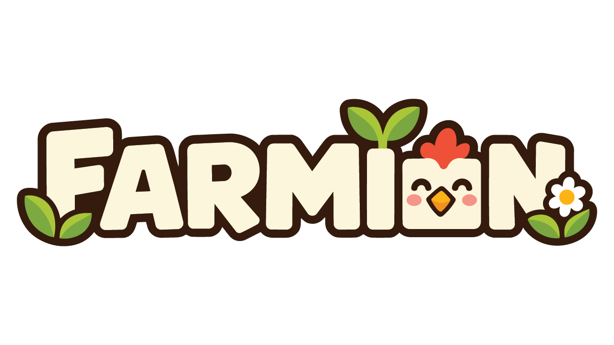

farm through the seasons
Shape the land and plant crops, trees and flowers. Keep livestock and look after them. Rain, snow and wind change the farm through the year, and greenhouses let you grow in any season.
A tiny game studio consisting of 2 friends working on Farmion, a cozy voxel farming & life sim game.

A cozy voxel farming game. Grow crops, run little shops and play with friends.
early access · q4 2026 · $10.95 / 9,95€
Shape the land and plant crops, trees and flowers. Keep livestock and look after them. Rain, snow and wind change the farm through the year, and greenhouses let you grow in any season.
Markets sell your produce over time, processors refine it into new goods and stockpiles add storage. Nicer surroundings make buildings better, so a pretty market holds more stock.
Cook dishes in a café, buffet or restaurant for the big money, sell raw produce fast in a grocery store, or arrange bouquets in a flower shop to earn prestige. Each business has its own skill tree.
Set up FarmBot drones to tend your fields, so you can spend your time where you want it.
Build and furnish your own house, then decorate the farm with roads, lights, fences, decorations and pets.
Play solo or with friends in online co-op. The farm level decides what everyone can build, quests push the farm forward, and your own progress extends your tractor's reach. The farm keeps going while you're offline.